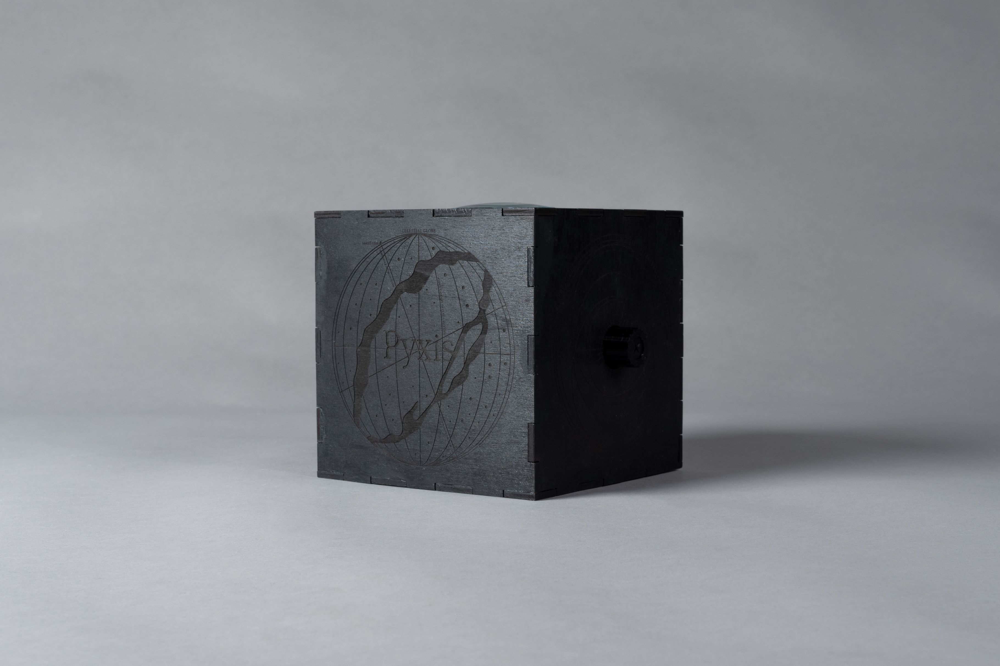
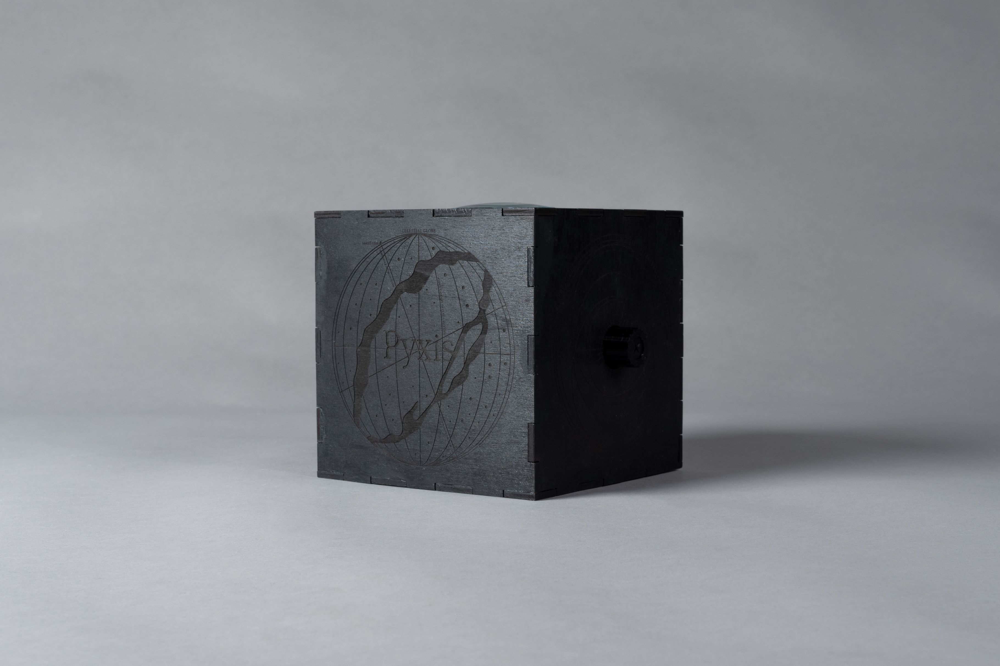
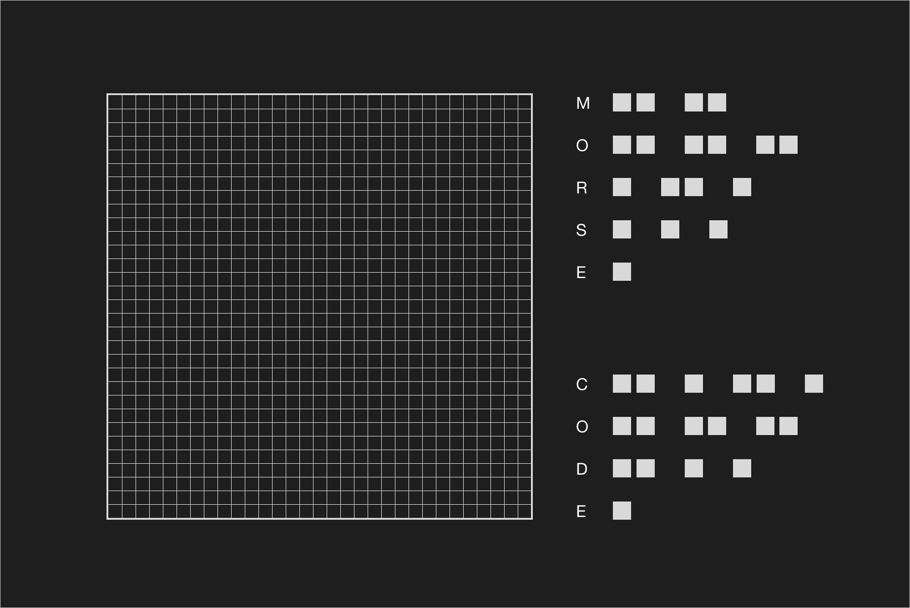
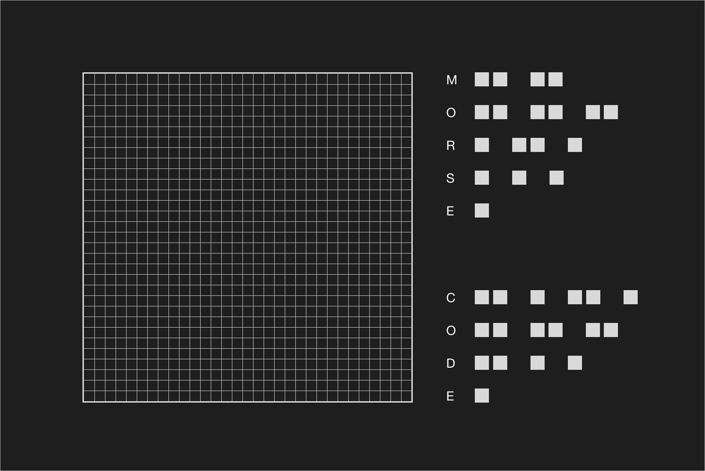
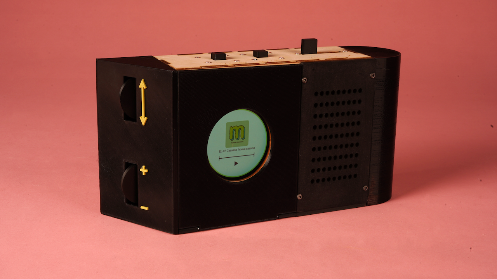
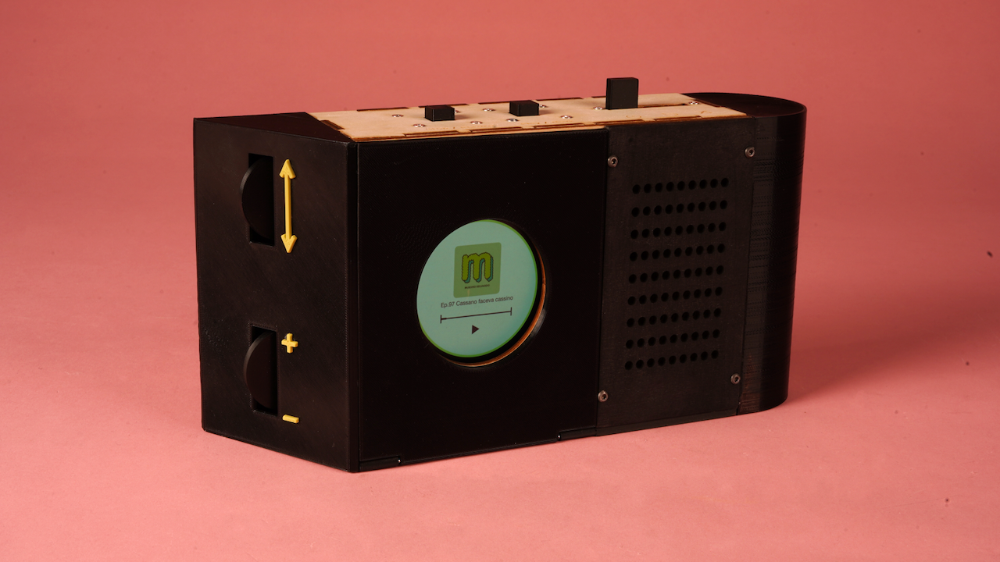

I am dedicated to uncovering user challenges and needs to design digital experiences that resonate deeply and provide genuine, lasting value. My aim is to create experiences where users feel both understood and effortlessly engaged.

Projects
D4T
UX | UI


Ease
UX | UI | Arduino | Coding


Polipath
UX | UI | Branding


Infinte Strolling
Coding | Arduino


Pyxis
Coding | Arduino

 

MC
Coding | LED Matrix

 

Radio Cast
3D Modelling | UX | UI

 
